2023年11月吃的。這家店是「第13屆沖繩麵集章活動（2023.10.1～2024.2.29）」的參加店家，是我去的第18家/共34家😊
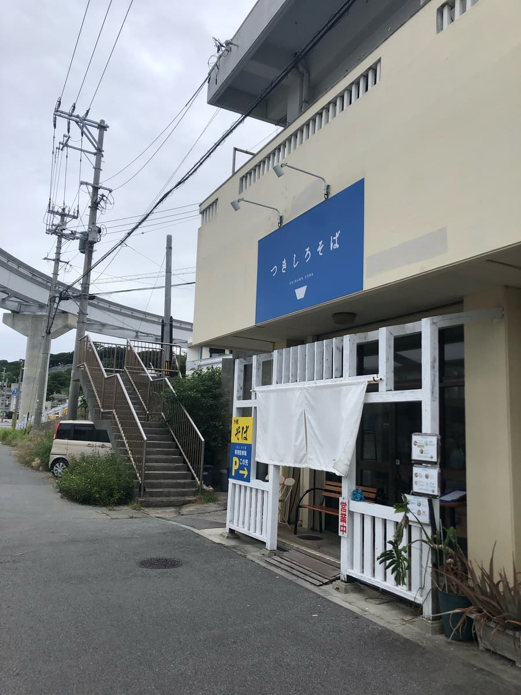
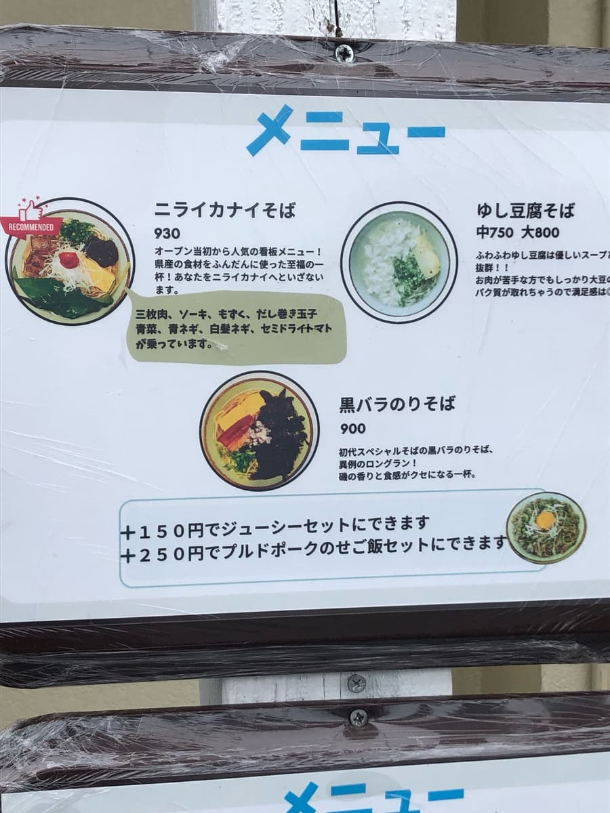
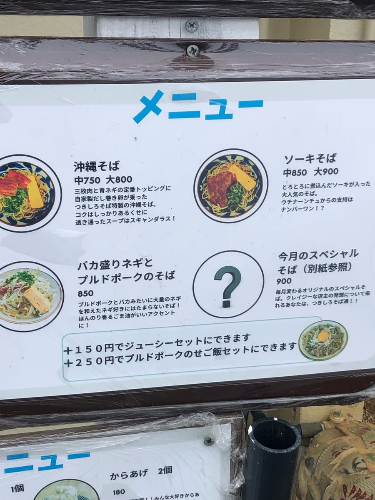
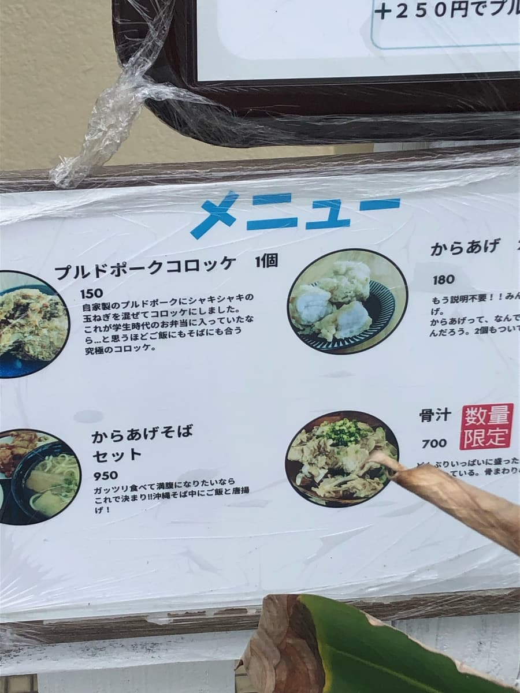
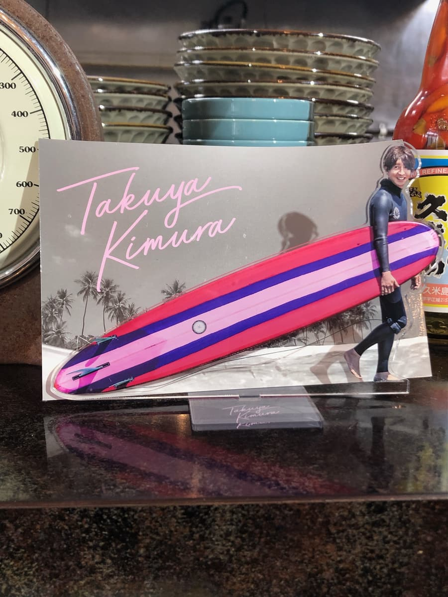
走進店裡，在地客人相當多很熱鬧。在店內入口附近的售票機買了集章活動介紹的「黑散海苔麵」。
我坐在吧檯座位，眼前就是像上面照片那樣的木村拓哉擺飾😁 我知道木村拓哉是玩長板的，但他拿的地方超級靠近板頭（前端）耶，這樣板子（衝浪板）會拖到地上，只有在日本本土那種沙灘浪點才能這樣拿吧ｗｗ 我自己也有在衝浪（短板），但沖繩都是礁岩（珊瑚礁的殘骸）浪點，用這種拿法板子會壞掉吧(;^ω^)
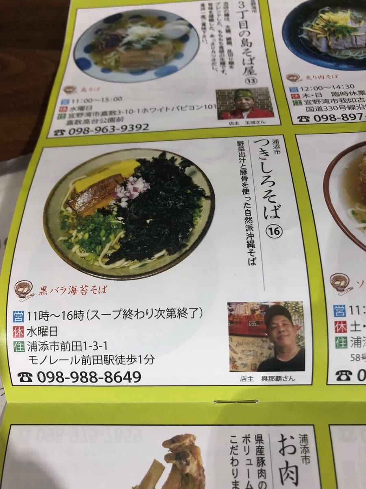
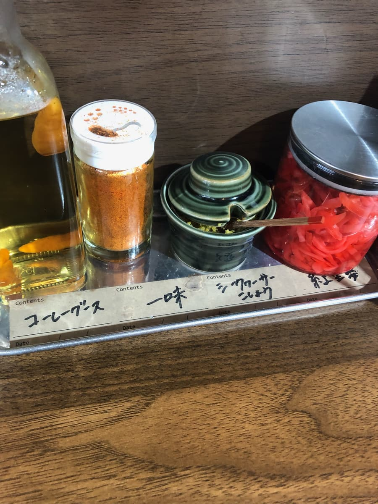
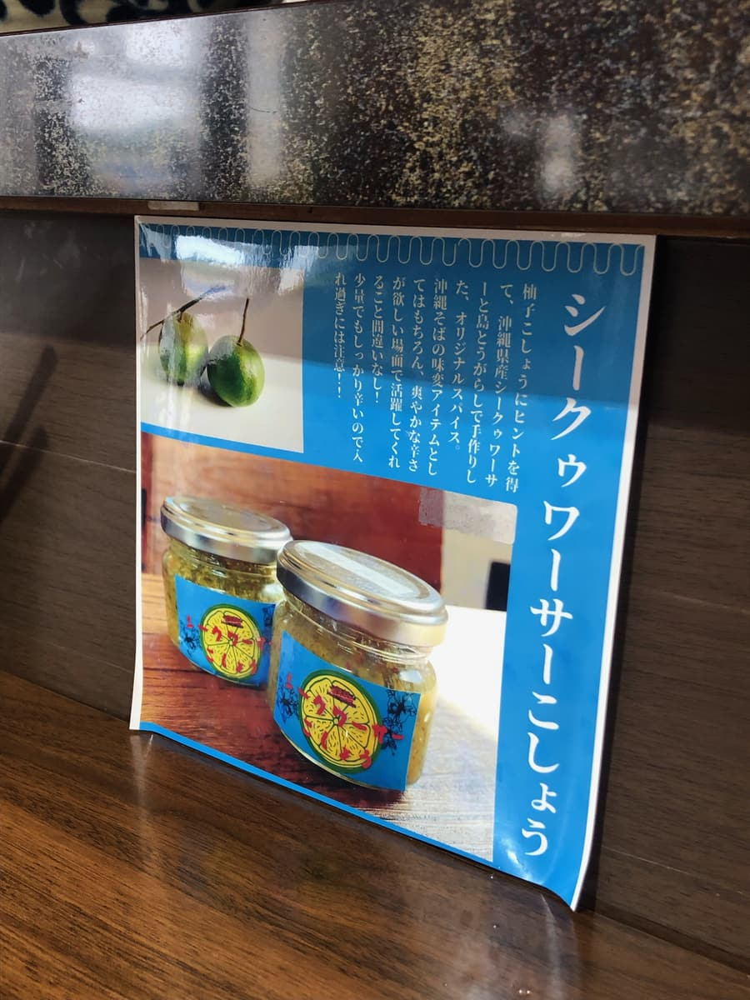
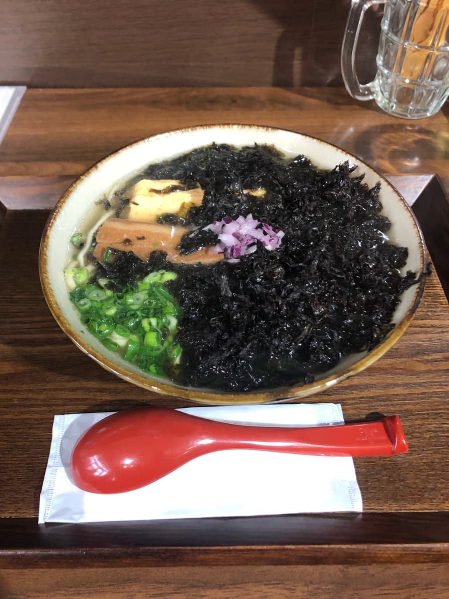
點餐後到上桌之前，我一直在觀察周圍的各種東西，過了一會兒「黑散海苔麵」來了🤗 上面鋪了超多黑散海苔，看起來好好吃😁
首先照慣例只喝一口湯。因為想品嚐純湯頭的味道，黑散海苔又很多，所以小心不讓它混進去(;^ω^)
就像集章活動手冊上說明的，以「蔬菜高湯和豬骨」為基底的湯頭相當好喝😋 我覺得水準很高。鹹味也很紮實，很好喝。
接著把湯和散海苔混在一起喝一口🤗 在好喝的湯頭之外，還能感受到海苔的風味，更好喝了😋 果然湯頭和其他店相比也是高水準的味道。
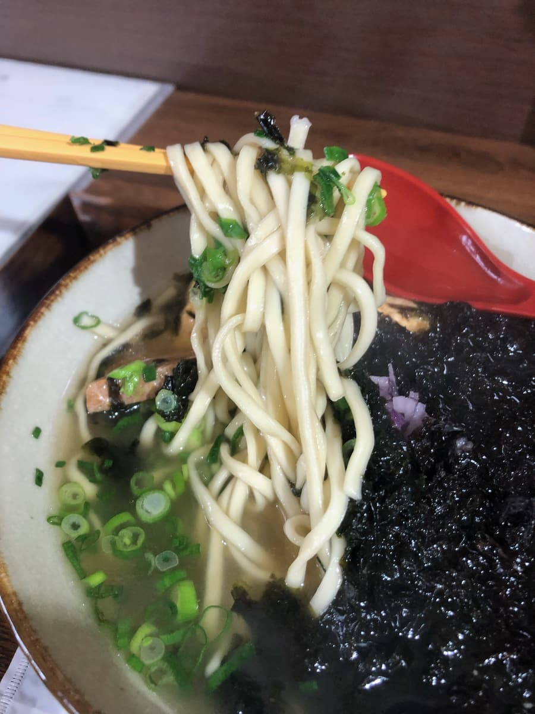
接著吃麵。是細的直麵。吸一口，是軟的普通麵條ｗｗ 這個是普通好吃的感覺。
配料的黑散海苔份量很多很棒。蛋也是厚煎蛋，還算好吃。不過，三層肉偏小，有一點筋感。因為覺得湯頭水準相當高，所以如果麵和三層肉能再好一點就好了。
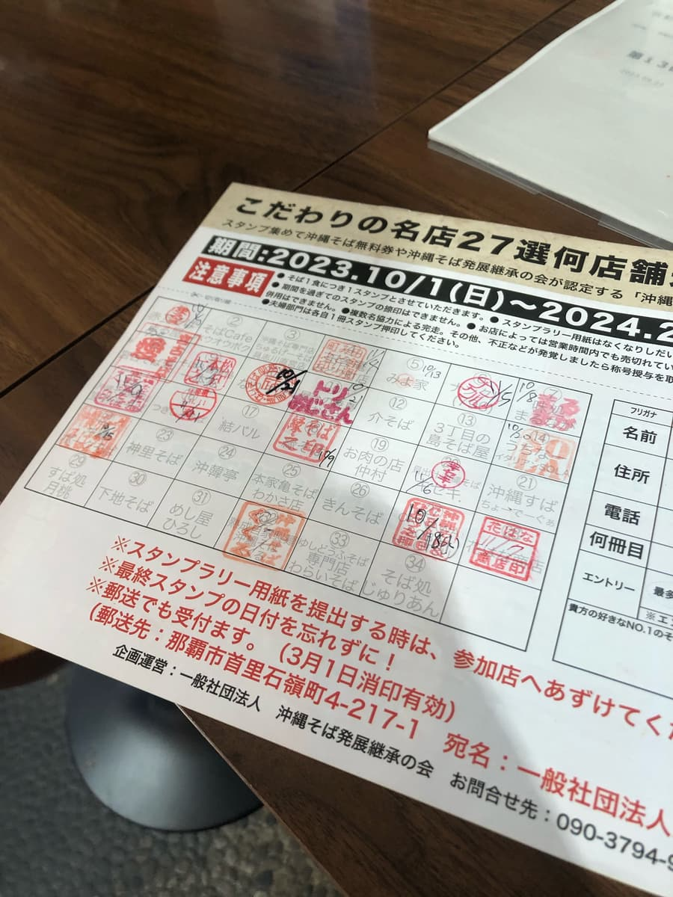
評分（10.5分/15分）：使用蔬菜高湯和豬骨、鹹味鮮明的湯頭，我覺得有推薦等級的好喝。用香檬胡椒變換口味也是很好的點綴，很好吃。不過，麵我覺得算普通，海苔和厚煎蛋這些配料很好吃，但三層肉還殘留一點筋感，覺得還差一點。不過，湯頭水準很高，要不要來吃一次看看呢？😁
麵：★★★☆☆（3）
湯頭：★★★★☆（4）
配料：★★★✬☆（3.5）